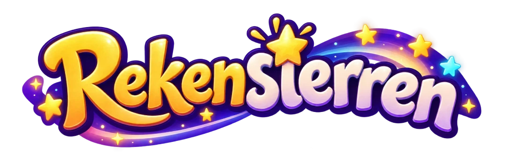
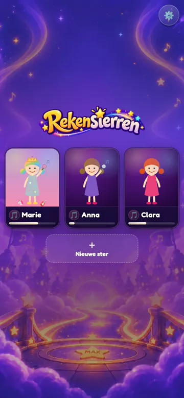
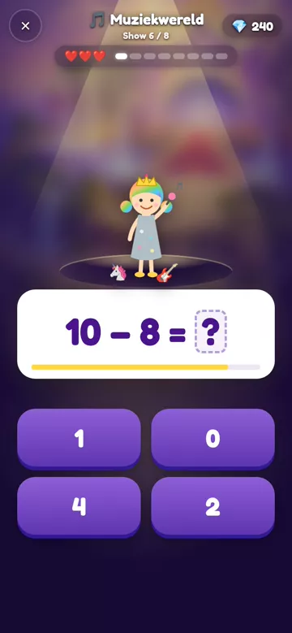
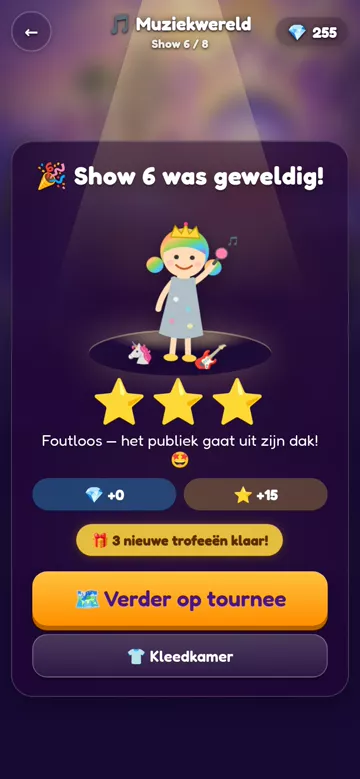

Rekenen en tellen als een show, voor kinderen van 5 tot 8.
▶ Speel meteen
Een eigen ster
Shows spelen
Sterren verdienen
Goed om te weten
- De voortgang blijft op dit toestel.
- Werkt ook zonder internet.
- Wat er geoefend wordt, kies je zelf achter het tandwiel.